<!DOCTYPE html>
<html lang="en">

<head>
  <meta charset="utf-8">
  <meta content="width=device-width, initial-scale=1.0" name="viewport">

  <title>iPortfolio Bootstrap Template - Index</title>
  <meta content="" name="description">
  <meta content="" name="keywords">

  <!-- Favicons -->
  <link href="assets/img/favicon.png" rel="icon">
  <link href="assets/img/apple-touch-icon.png" rel="apple-touch-icon">

  <!-- Google Fonts -->
  <link href="https://fonts.googleapis.com/css?family=Open+Sans:300,300i,400,400i,600,600i,700,700i|Raleway:300,300i,400,400i,500,500i,600,600i,700,700i|Poppins:300,300i,400,400i,500,500i,600,600i,700,700i" rel="stylesheet">

  <!-- Vendor CSS Files -->
  <link href="assets/vendor/aos/aos.css" rel="stylesheet">
  <link href="assets/vendor/bootstrap/css/bootstrap.min.css" rel="stylesheet">
  <link href="assets/vendor/bootstrap-icons/bootstrap-icons.css" rel="stylesheet">
  <link href="assets/vendor/boxicons/css/boxicons.min.css" rel="stylesheet">
  <link href="assets/vendor/glightbox/css/glightbox.min.css" rel="stylesheet">
  <link href="assets/vendor/swiper/swiper-bundle.min.css" rel="stylesheet">

  <!-- Template Main CSS File -->
  <link href="assets/css/style.css" rel="stylesheet">

  <!-- =======================================================
  * Template Name: iPortfolio
  * Updated: Nov 17 2023 with Bootstrap v5.3.2
  * Template URL: https://bootstrapmade.com/iportfolio-bootstrap-portfolio-websites-template/
  * Author: BootstrapMade.com
  * License: https://bootstrapmade.com/license/
  ======================================================== -->
</head>

<body>

  <!-- ======= Mobile nav toggle button ======= -->
  <i class="bi bi-list mobile-nav-toggle d-xl-none"></i>

  <!-- ======= Header ======= -->
  <header id="header">
    <div class="d-flex flex-column">

      <div class="profile">
        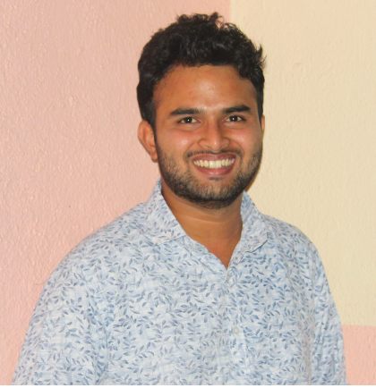
        <h1 class="text-light"><a href="index.html">Aniket Fasate</a></h1>
        <div class="social-links mt-3 text-center">
          <!-- <a href="#" class="medium"><i class="bx bxl-twitter"></i></a> -->
          <!-- <a href="#" class="facebook"><i class="bx bxl-facebook"></i></a> -->
          <a href="https://medium.com/@fasateaniket5" class="instagram"><i class="bi bi-medium"></i></a>
          <a href="https://github.com/AniketFasate27" class="github"><i class="bi bi-github"></i></a>
          <a href="https://www.linkedin.com/in/aniketfasate27/" class="linkedin"><i class="bx bxl-linkedin"></i></a>
        </div>
      </div>

      <nav id="navbar" class="nav-menu navbar">
        <ul>
          <li><a href="#hero" class="nav-link scrollto active"><i class="bx bx-home"></i> <span>Home</span></a></li>
          <li><a href="#about" class="nav-link scrollto"><i class="bx bx-user"></i> <span>About</span></a></li>
          <li><a href="#resume" class="nav-link scrollto"><i class="bx bx-file-blank"></i> <span>Resume</span></a></li>
          <li><a href="#portfolio" class="nav-link scrollto"><i class="bx bx-book-content"></i> <span>Portfolio</span></a></li>
          <li><a href="#project" class="nav-link scrollto"><i class="bx bx-file-blank"></i> <span>Project</span></a></li>
          <!-- <li><a href="#services" class="nav-link scrollto"><i class="bx bx-server"></i> <span>Services</span></a></li> -->
          <li><a href="#contact" class="nav-link scrollto"><i class="bx bx-envelope"></i> <span>Contact</span></a></li>
        </ul>
      </nav><!-- .nav-menu -->
    </div>
  </header><!-- End Header -->

  <!-- ======= Hero Section ======= -->
  <section id="hero" class="d-flex flex-column justify-content-center align-items-center">
    <div class="hero-container" data-aos="fade-in">
      <h1>Aniket Fasate</h1>
      <p>Hi, I'm <span class="typed" data-typed-items="Founder, Developer, Researcher, Freelancer"></span></p>
    </div>
  </section><!-- End Hero -->

  <main id="main">

    <!-- ======= About Section ======= -->
    <section id="about" class="about">
      <div class="container">

        <div class="section-title">
          <h2>About</h2>
          <p style="text-indent: 40px"                                                  , style="text-align: justify;">I am a Master of Science student in Internet of Things at Northeastern University, and the founder of Avinya Intelligence, a company that develops innovative IoT and AI/ML solutions. I have a keen interest in research and development, and have three years of experience as a researcher at the Indian Institute of Technology. I completed my Bachelor's degree in Electronics and Telecommunication Engineering. My passion for IoT and AI/ML stems from my belief that these technologies have the potential to revolutionize the way we live and work. I am particularly interested in developing solutions that can address real-world problems in areas such as healthcare, transportation, and energy.</p>
        </div>

        <div class="row">
          <div class="col-lg-4" data-aos="fade-right">
            
          </div>
          <div class="col-lg-8 pt-4 pt-lg-0 content" data-aos="fade-left">
            <h3> AI/Ml &amp; IoT Researcher and Developer.</h3>
            <p class="fst-italic">
              “If you think that the internet has changed your life, think again. The Internet of Things is about to change it all over again!”.
            </p>
            <div class="row">
              <div class="col-lg-6">
                <ul>
                  <li><i class="bi bi-chevron-right"></i> <strong>Birthday:</strong> <span>27 Feb 1997</span></li>
                  <li><i class="bi bi-chevron-right"></i> <strong>Website:</strong> <span> <a href="<https://www.linkedin.com/in/aniketfasate27/">linkedin</a></span></li>
                  <li><i class="bi bi-chevron-right"></i> <strong>Website:</strong> <span> <a href="<https://medium.com/@fasateaniket5">Medium</a></span></li>
                  <li><i class="bi bi-chevron-right"></i> <strong>Website:</strong> <span> <a href="<https://github.com/AniketFasate27">Github</a></span></li>
                  <li><i class="bi bi-chevron-right"></i> <strong>Resume:</strong> <span> <a href="<https://github.com/AniketFasate27/aniketfasate/blob/main/assets/Aniket_Fasate_Resume.pdf" download="Aniket_Fasate_Resume.pdf">Aniket_Fasate_Resume.pdf</a></span></li>
                  <!-- <li><i class="bi bi-chevron-right"></i> <strong>Phone:</strong> <span>+185 733 28478</span></li> -->
                  <!-- <li><i class="bi bi-chevron-right"></i> <strong>City:</strong> <span>Boston, MA, USA</span></li>  -->
                </ul>
              </div>
              <div class="col-lg-6">
                <ul>
                  <li><i class="bi bi-chevron-right"></i> <strong>University:</strong> <span>Northeastern University, Boston</span></li>
                  <li><i class="bi bi-chevron-right"></i> <strong>Degree:</strong> <span>Master of Science in Internet Of Things</span></li>
                  <li><i class="bi bi-chevron-right"></i> <strong>Email:</strong> <span>fasate.a@northeastern.edu</span></li>
                  <li><i class="bi bi-chevron-right"></i> <strong>Email:</strong> <span>fasateaniket5@gmail.com</span></li>
                  <li><i class="bi bi-chevron-right"></i> <strong>Phone:</strong> <span>+185 733 28478</span></li>
                  <!-- <li><i class="bi bi-chevron-right"></i> <strong>Freelance:</strong> <span>Available</span></li> -->
                </ul>
              </div>
            </div>
            <!-- <p>
              Officiis eligendi itaque labore et dolorum mollitia officiis optio vero. Quisquam sunt adipisci omnis et ut. Nulla accusantium dolor incidunt officia tempore. Et eius omnis.
              Cupiditate ut dicta maxime officiis quidem quia. Sed et consectetur qui quia repellendus itaque neque. Aliquid amet quidem ut quaerat cupiditate. Ab et eum qui repellendus omnis culpa magni laudantium dolores.
            </p> -->
          </div>
        </div>

      </div>
    </section><!-- End About Section -->

    <!-- ======= Facts Section ======= -->
    <section id="facts" class="facts">
      <div class="container">

        <div class="section-title">
          <h2>Facts</h2>
          <!-- <p>Magnam dolores commodi suscipit. Necessitatibus eius consequatur ex aliquid fuga eum quidem. Sit sint consectetur velit. Quisquam quos quisquam cupiditate. Et nemo qui impedit suscipit alias ea. Quia fugiat sit in iste officiis commodi quidem hic quas.</p> -->
        </div>

        <div class="row no-gutters">

          <div class="col-lg-3 col-md-6 d-md-flex align-items-md-stretch" data-aos="fade-up">
            <div class="count-box">
              <i class="bi bi-emoji-smile"></i>
              <span data-purecounter-start="0" data-purecounter-end="2" data-purecounter-duration="1" class="purecounter"></span>
              <p><strong>Happy Clients</strong> "Delighting Customers Every Day"</p>
            </div>
          </div>

          <div class="col-lg-3 col-md-6 d-md-flex align-items-md-stretch" data-aos="fade-up" data-aos-delay="100">
            <div class="count-box">
              <i class="bi bi-substack"></i>
              <span data-purecounter-start="0" data-purecounter-end="12" data-purecounter-duration="1" class="purecounter"></span>
              <p><strong>Blogs</strong> adipisci atque cum quia aut</p>
            </div>
          </div>

          <div class="col-lg-3 col-md-6 d-md-flex align-items-md-stretch" data-aos="fade-up" data-aos-delay="100">
            <div class="count-box">
              <i class="bi bi-journal-richtext"></i>
              <span data-purecounter-start="0" data-purecounter-end="8" data-purecounter-duration="1" class="purecounter"></span>
              <p><strong>projects</strong> adipisci atque cum quia aut</p>
            </div>
          </div>
          
          <!-- <div class="col-lg-3 col-md-6 d-md-flex align-items-md-stretch" data-aos="fade-up" data-aos-delay="200">
            <div class="count-box">
              <i class="bi bi-headset"></i>
              <span data-purecounter-start="0" data-purecounter-end="1453" data-purecounter-duration="1" class="purecounter"></span>
              <p><strong>Hours Of Support</strong> aut commodi quaerat</p>
            </div>
          </div> -->

          

          <!-- <div class="col-lg-3 col-md-6 d-md-flex align-items-md-stretch" data-aos="fade-up" data-aos-delay="300">
            <div class="count-box">
              <i class="bi bi-people"></i>
              <span data-purecounter-start="0" data-purecounter-end="32" data-purecounter-duration="1" class="purecounter"></span>
              <p><strong>Hard Workers</strong> rerum asperiores dolor</p>
            </div>
          </div> -->

        </div>

      </div>
    </section><!-- End Facts Section -->

    <!-- ======= Skills Section ======= -->
    <section id="skills" class="skills section-bg">
      <div class="container">

        <div class="section-title">
          <h2>Skills</h2>
          <p style="text-align: justify;">An IoT engineer requires proficiency in programming (Python, C++), knowledge of networking protocols (MQTT, CoAP), experience with IoT platforms (AWS IoT, Azure IoT Hub), understanding of data analytics and machine learning, along with skills in cybersecurity, hardware design, and cloud computing. Effective communication and project management skills are also essential.</p>
        </div>

        <div class="row skills-content">

          <div class="col-lg-6" data-aos="fade-up">

            <div class="progress">
              <span class="skill">Internet Of Things <i class="val">90%</i></span>
              <div class="progress-bar-wrap">
                <div class="progress-bar" role="progressbar" aria-valuenow="90" aria-valuemin="0" aria-valuemax="100"></div>
              </div>
            </div>

            <div class="progress">
              <span class="skill">Embedded Systems <i class="val">90%</i></span>
              <div class="progress-bar-wrap">
                <div class="progress-bar" role="progressbar" aria-valuenow="90" aria-valuemin="0" aria-valuemax="100"></div>
              </div>
            </div>

            <div class="progress">
              <span class="skill">Networking and Communications Protocols<i class="val">85%</i></span>
              <div class="progress-bar-wrap">
                <div class="progress-bar" role="progressbar" aria-valuenow="90" aria-valuemin="0" aria-valuemax="100"></div>
              </div>
            </div>

            <div class="progress">
              <span class="skill">IoT Platforms and Cloud Services<i class="val">80%</i></span>
              <div class="progress-bar-wrap">
                <div class="progress-bar" role="progressbar" aria-valuenow="75" aria-valuemin="0" aria-valuemax="100"></div>
              </div>
            </div>

            <!-- <div class="progress">
              <span class="skill">Web-Development <i class="val">75%</i></span>
              <div class="progress-bar-wrap">
                <div class="progress-bar" role="progressbar" aria-valuenow="75" aria-valuemin="0" aria-valuemax="100"></div>
              </div>
            </div> -->


          </div>

          <div class="col-lg-6" data-aos="fade-up" data-aos-delay="100">

            <div class="progress">
              <span class="skill">Artificial Intelligence &amp; Machine Learning<i class="val">80%</i></span>
              <div class="progress-bar-wrap">
                <div class="progress-bar" role="progressbar" aria-valuenow="80" aria-valuemin="0" aria-valuemax="100"></div>
              </div>
            </div>

            <div class="progress">
              <span class="skill">Web-Development <i class="val">70%</i></span>
              <div class="progress-bar-wrap">
                <div class="progress-bar" role="progressbar" aria-valuenow="90" aria-valuemin="0" aria-valuemax="100"></div>
              </div>
            </div>

            <div class="progress">
              <span class="skill">Leadership &amp; Project Management<i class="val">75%</i></span>
              <div class="progress-bar-wrap">
                <div class="progress-bar" role="progressbar" aria-valuenow="55" aria-valuemin="0" aria-valuemax="100"></div>
              </div>
            </div>

          </div>

        </div>

      </div>
    </section><!-- End Skills Section -->

    <!-- ======= Resume Section ======= -->
    <section id="resume" class="resume">
      <div class="container">

        <div class="section-title">
          <h2>Resume</h2>
          <!-- <p>"Embracing challenges with resilience, our team consistently strives for excellence. We believe in the power of innovation and creativity to overcome obstacles. Our commitment to quality and attention to detail are evident in every project we undertake. Collaborative in spirit, we value each individual's contribution and work together to achieve collective success. In our pursuit of excellence, we remain dedicated to delivering outstanding results and exceeding expectations."</p> -->
        </div>

        <div class="row">
          <div class="col-lg-6" data-aos="fade-up">
            <!-- <h3 class="resume-title">Sumary</h3> -->
            <div class="resume-item pb-0">
              <!-- <h4>Aniket Fasate</h4>
              <p><em><p style="text-align: justify;"> I am a Master of Science student in Internet of Things at Northeastern University, and the founder of Avinya Intelligence, a company that develops innovative IoT and AI/ML solutions. I have a keen interest in research and development, and have three years of experience as a researcher at the Indian Institute of Technology. I completed my Bachelor's degree in Electronics and Telecommunication Engineering.</p></em></p>
              <ul>
                <li>Boston, MA, USA</li>
                <li>(857) 332-8478</li>
                <li>fasate.a@northeastern.edu</li> -->
              <!-- </ul> -->
            </div>

            <div class="resume-item pb-0"></div>
            <h3 class="resume-title">Education</h3>
            <!-- <div class="resume-item pb-0"></div> -->
            <div class="resume-item">
              <h4>Master of Science In Internet Of Things</h4>
              <h5>Aug 2023 - April 2025</h5>
              <p><em><b>Northeastern University, Boston</b></em></p>
              <p style="text-align: justify;"> The Master of Science in Internet of Things from Northeastern University is a comprehensive program designed for professionals aspiring to specialize in the rapidly evolving IoT sector. This advanced curriculum integrates engineering principles, computer science, and data analytics to impart robust skills in IoT system design, implementation, and analysis. The program emphasizes practical, hands-on experience with state-of-the-art technologies, preparing graduates to innovate and lead in the dynamic field of IoT.</p>
            </div>
            <div class="resume-item">
              <h4>Bachelor In Electronics and Telecommunication Engineering</h4>
              <h5>Aug 2016 - Aug 2020</h5>
              <p><em><b>Shri Sant Gajanan Maharaj college Of Engineering, Shegaon, India</b></em></p>
              <p style="text-align: justify;"> Earned a Bachelor's in Electronics and Telecommunication Engineering from Shri Sant Gajanan Maharaj College of Engineering, this program melds rigorous theoretical foundations with practical insights in electronics, digital communication, signal processing, and network design, equipping graduates with the expertise to excel in the dynamic tech industry.</p>
            </div>
            <div class="resume-item">
              <h4>Higher Secondary School Certificate</h4>
              <h5>Aug 2014 - Jun 2016</h5>
              <p><em><b>Banarasidas Ruiya Junior College, Katol, India</b></em></p>
              <p style="text-align: justify;">Attained the Higher Secondary School Certificate from Banarasidas Ruiya Junior College, Katol, India, demonstrating a strong academic foundation in core subjects. This certificate represents a successful completion of pre-university education, laying a solid groundwork for further studies and professional pursuits in diverse fields. The curriculum focused on in-depth theoretical knowledge, critical thinking, and analytical skills.</p>
            </div>
          </div>
          <div class="col-lg-6" data-aos="fade-up" data-aos-delay="100">
            <h3 class="resume-title">Professional Experience</h3>
            <div class="resume-item">
              <h4>Project Researcher</h4>
              <h5>Feb 2021 - Aug 2023</h5>
              <p><em><b>Indian Instituate Of Technology (IIT-B), Bombay, India</b></em></p>
              <ul>
                <li><b>Site Survey Kit:</b> <p style="text-align: justify;">Engineered in MPU6050 and MPU9250 versions, this kit excels in on-site motion data collection. Achieving high-frequency data acquisition (up to 4kHz accelerometer, 8kHz gyroscope), the handheld device offers real-time insights with graph plotting. Its hosting server capabilities and Over-The-Air updates enhance convenience, ideal for construction and research, providing a portable solution for motion analysis, structural health monitoring, and dynamic behavior research.</p></li>
                <li><b>Data Logger:</b><p style="text-align: justify;">Presenting two versions tailored for diverse monitoring needs. Version 1 integrates DHT22 and LDR sensors, optimizing climate monitoring with real-time user connectivity. Version 2 employs K-type thermocouples for precise Fahrenheit readings, catering to high-temperature environments. Both versions prioritize advanced data analysis, featuring hosting servers for seamless data management.</p></li>
                <li><b>Dandi Project:</b><p style="text-align: justify;">Implementing ESP series microcontrollers, the Dandi Project optimizes structural health monitoring on a 40-meter platform. Utilizing predictive analytics, the device assesses structural integrity. Featuring a userfriendly GUI, OTA updates, and advanced telemetry, this project seamlessly amalgamates IoT capabilities, data analytics, and predictive maintenance for enhanced structural robustness. </p></li>
                <li><p style="text-align: justify;">Utilizing ESP32-CAM and YOLOv3, this project employs OpenCV and ESPAsyncWebServer for efficient image processing and web hosting. Through innovative tunneling, users experience dynamic object identification on screens, harmonizing cutting-edge algorithms with ESP32-CAM capabilities for advanced real-time environmental monitoring</p></li>
                <li><p style="text-align: justify;">AI/ML Projects : Engaged in diverse projects, including advanced tasks like object detection and image classification. Additionally, simpler yet impactful projects involve sentiment analysis, spam email detection, and predictive text generation. These applications showcase proficiency in machine learning algorithms, neural networks, and natural language processing for comprehensive data analysis.</p></li>
              </ul>
            </div>
            <div class="resume-item">
              <h4>IoT &amp; AI/ML trainee</h4>
              <h5>Jun 2018 - july 2018</h5>
              <p><em><b>Defence Research and Development Organisation (DRDO), India</b></em></p>
              <ul>
                <li><p style="text-align: justify;"> Sentimental Analysis: Engineered an intricate sentiment analysis system employing TensorFlow for neural network architecture, Scikit-learn for machine learning algorithms, and NLTK for natural language processing. Implemented a Convolutional Neural Network (CNN) model with tokenization, embedding layers, and the Adam optimizer for precise text analysis. Rigorous dataset handling, preprocessing, and backpropagation were executed. The Graphical User Interface (GUI) elevated the user experience, integrating real-time feedback. This project showcases comprehensive expertise, offering a robust sentiment identification tool with diverse AI/ML libraries.</p></li>
                <!-- <li>Managed up to 5 projects or tasks at a given time while under pressure</li> -->
                <!-- <li>Recommended and consulted with clients on the most appropriate graphic design</li> -->
                <!-- <li>Created 4+ design presentations and proposals a month for clients and account managers</li> -->
              </ul>
            </div>

            <div class="resume-item">
              <h4>IoT &amp; AI/ML trainee</h4>
              <h5>Jun 2017 - july 2017</h5>
              <p><em><b>Indian Instituate of Technology, Kanpur, India</b></em></p>
              <ul>
                <li><p style="text-align: justify;"> Autonomous Vehicle Prototype Development: Pioneering an autonomous vehicle, we initiated the project by assembling the vehicle from scratch. IoT sensors, ultrasonic sensors, and ESP32 controllers facilitated data collection. Subsequently, the data underwent meticulous training in MATLAB using backpropagation. The Raspberry Pi, employed for self-training testing, exemplifies robustness in real-world scenarios. This project integrates cuttingedge technologies, showcasing proficiency in sensor fusion, deep learning, and embedded systems, culminating in a comprehensive autonomous vehicle prototype.</p></li>
                <!-- <li>Managed up to 5 projects or tasks at a given time while under pressure</li> -->
                <!-- <li>Recommended and consulted with clients on the most appropriate graphic design</li> -->
                <!-- <li>Created 4+ design presentations and proposals a month for clients and account managers</li> -->
              </ul>
            </div>
          </div>
        </div>

      </div>
    </section><!-- End Resume Section -->

    <!-- ======= Portfolio Section ======= -->
    <section id="portfolio" class="portfolio section-bg">
      <div class="container">

        <div class="section-title">
          <h2>Research Blogs</h2>
          <p style="text-align: justify;"> Welcome to the insightful world of Aniket, a distinguished voice in the realms of the Internet of Things (IoT), Artificial Intelligence (AI), Machine Learning (ML), and the latest technological advancements. With a keen eye for the future, Aniket eloquently demystifies complex technologies, making them accessible to a diverse audience. Their blog is a treasure trove of in-depth analyses, trend forecasts, and thought-provoking discussions about how these technologies are revolutionizing industries and daily life. Whether you're a tech enthusiast or a professional seeking to stay ahead of the curve, Aniket's writings are an indispensable resource for understanding the technological landscape of tomorrow.</p>
        </div>

        <div class="row" data-aos="fade-up">
          <div class="col-lg-12 d-flex justify-content-center">
            <ul id="portfolio-flters">
              <li data-filter="*" class="filter-active">All</li>
              <li data-filter=".filter-app">IoT</li>
              <li data-filter=".filter-card">AI/ML</li>
              <li data-filter=".filter-web">Upcomming</li>
            </ul>
          </div>
        </div>

        <div class="row portfolio-container" data-aos="fade-up" data-aos-delay="100">

          <div class="col-lg-4 col-md-6 portfolio-item filter-app">
            <div class="portfolio-wrap">
              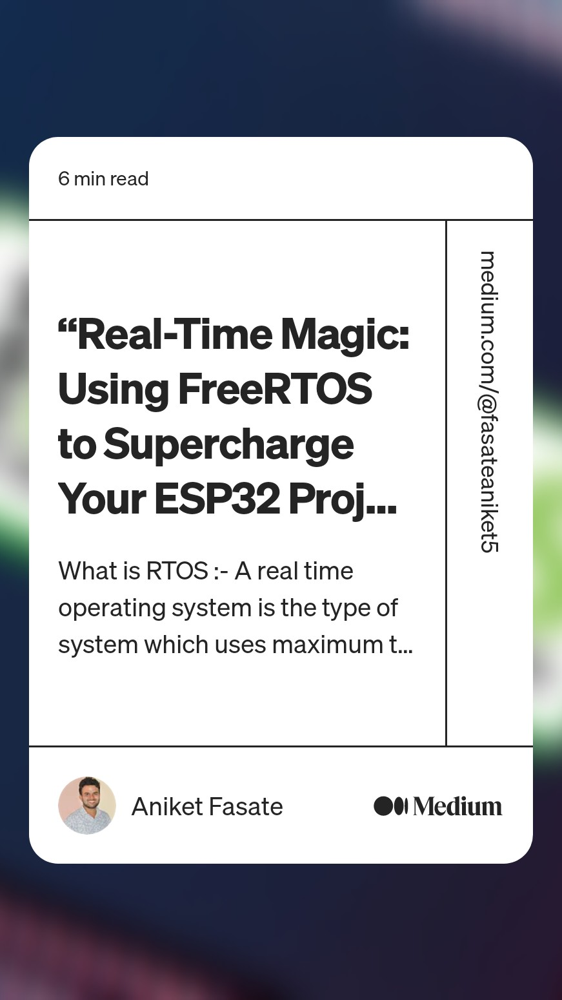
              <div class="portfolio-links">
                <a href="assets/img/portfolio/portfolio-1.jpg" data-gallery="portfolioGallery" class="portfolio-lightbox" title="Seamless ESP32 Upgrades: A Guide to OTA Firmware and Sketch Updates"><i class="bx bx-plus"></i></a>
                <a href="https://medium.com/@fasateaniket5/ota-of-firmware-and-sketch-file-update-e4826efce24" title="More Details"><i class="bx bx-link"></i></a>
              </div>
            </div>
          </div>

          <div class="col-lg-4 col-md-6 portfolio-item filter-web">
            <div class="portfolio-wrap">
              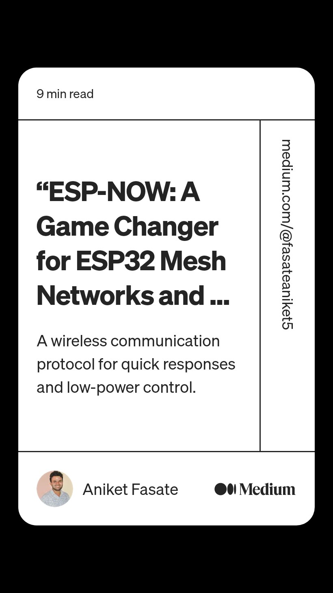
              <div class="portfolio-links">
                <a href="assets/img/portfolio/portfolio-2.jpg" data-gallery="portfolioGallery" class="portfolio-lightbox" title="“ESP-NOW: A Game Changer for ESP32 Mesh Networks and Sensor Applications”"><i class="bx bx-plus"></i></a>
                <a href="https://medium.com/@fasateaniket5/esp-now-protocol-with-esp32-76a84d5f10fb" title="More Details"><i class="bx bx-link"></i></a>
              </div>
            </div>
          </div>

          <div class="col-lg-4 col-md-6 portfolio-item filter-app">
            <div class="portfolio-wrap">
              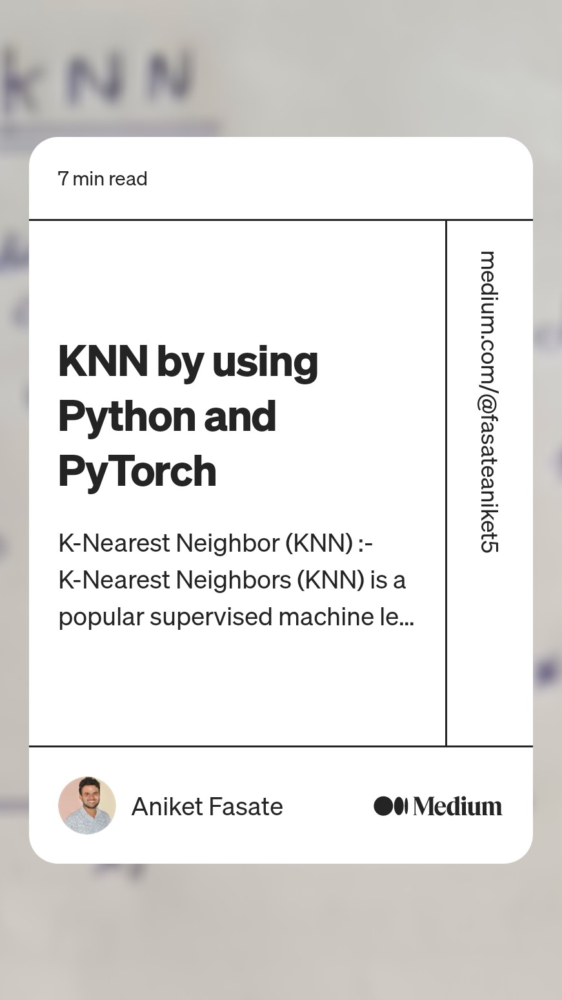
              <div class="portfolio-links">
                <a href="assets/img/portfolio/portfolio-3.jpg" data-gallery="portfolioGallery" class="portfolio-lightbox" title="“Harnessing the Power of Proximity: k-Nearest Neighbors with Python and PyTorch”"><i class="bx bx-plus"></i></a>
                <a href="https://medium.com/@fasateaniket5/knn-by-using-python-and-pytorch-c4e65958a050" title="More Details"><i class="bx bx-link"></i></a>
              </div>
            </div>
          </div>

          <div class="col-lg-4 col-md-6 portfolio-item filter-card">
            <div class="portfolio-wrap">
              
              <div class="portfolio-links">
                <a href="assets/img/portfolio/portfolio-4.jpg" data-gallery="portfolioGallery" class="portfolio-lightbox" title="“Optimizing Storage on Embedded Systems: A Guide to SPIFFS, LittleFS, and FAT”"><i class="bx bx-plus"></i></a>
                <a href="https://medium.com/@fasateaniket5/explore-about-the-file-system-n-controller-spiffs-fat-little-fs-62c2b5924591" title="More Details"><i class="bx bx-link"></i></a>
              </div>
            </div>
          </div>

          <div class="col-lg-4 col-md-6 portfolio-item filter-web">
            <div class="portfolio-wrap">
              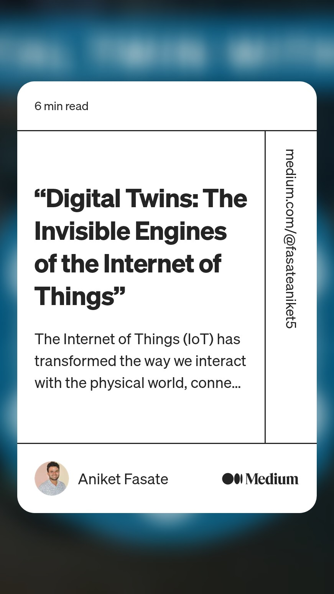
              <div class="portfolio-links">
                <a href="assets/img/portfolio/portfolio-5.jpg" data-gallery="portfolioGallery" class="portfolio-lightbox" title="“Digital Twins: The Invisible Engines of the Internet of Things”"><i class="bx bx-plus"></i></a>
                <a href="https://medium.com/@fasateaniket5/digital-twins-the-invisible-engines-of-the-internet-of-things-4828d7140cde" title="More Details"><i class="bx bx-link"></i></a>
              </div>
            </div>
          </div>

          <div class="col-lg-4 col-md-6 portfolio-item filter-app">
            <div class="portfolio-wrap">
              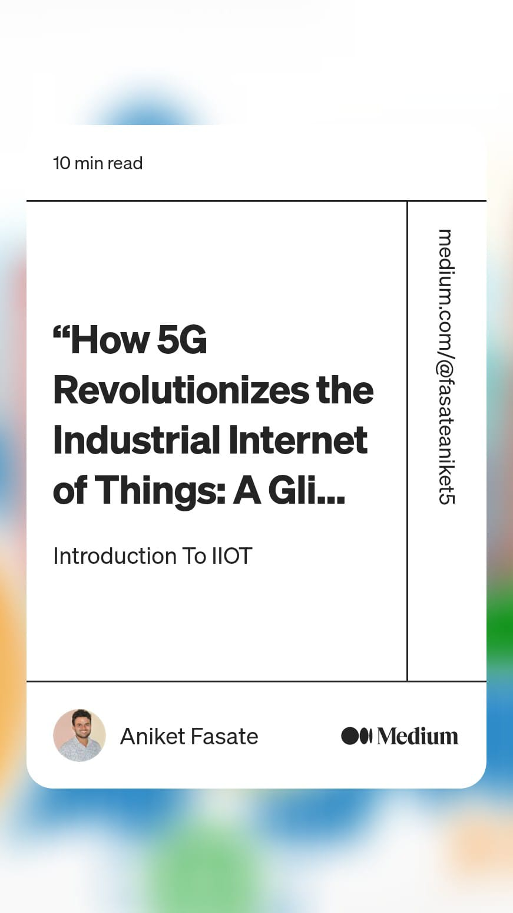
              <div class="portfolio-links">
                <a href="assets/img/portfolio/portfolio-6.jpg" data-gallery="portfolioGallery" class="portfolio-lightbox" title="“How 5G Revolutionizes the Industrial Internet of Things: A Glimpse into the Future”"><i class="bx bx-plus"></i></a>
                <a href="https://medium.com/@fasateaniket5/how-5g-revolutionizes-the-industrial-internet-of-things-a-glimpse-into-the-future-ef0ded43e623" title="More Details"><i class="bx bx-link"></i></a>
              </div>
            </div>
          </div>

          <div class="col-lg-4 col-md-6 portfolio-item filter-card">
            <div class="portfolio-wrap">
              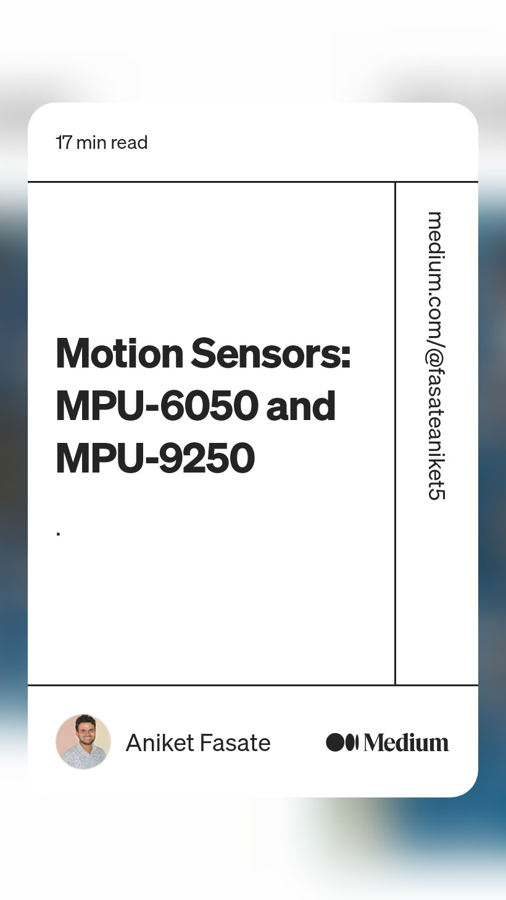
              <div class="portfolio-links">
                <a href="assets/img/portfolio/portfolio-7.jpg" data-gallery="portfolioGallery" class="portfolio-lightbox" title="“Mastering Motion Sensing: A Comprehensive Guide to the MPU6050 and MPU9250”"><i class="bx bx-plus"></i></a>
                <a href="https://medium.com/@fasateaniket5/motion-sensors-mpu-6050-and-mpu9250-e86467e9a237" title="More Details"><i class="bx bx-link"></i></a>
              </div>
            </div>
          </div>

          <div class="col-lg-4 col-md-6 portfolio-item filter-card">
            <div class="portfolio-wrap">
              
              <div class="portfolio-links">
                <a href="assets/img/portfolio/portfolio-8.jpg" data-gallery="portfolioGallery" class="portfolio-lightbox" title="“Demystifying Backpropagation: A Guide to Calculating Gradients”"><i class="bx bx-plus"></i></a>
                <a href="https://medium.com/@fasateaniket5/gradient-calculation-by-backpropagation-eee0a7da6353" title="More Details"><i class="bx bx-link"></i></a>
              </div>
            </div>
          </div>

          <div class="col-lg-4 col-md-6 portfolio-item filter-web">
            <div class="portfolio-wrap">
              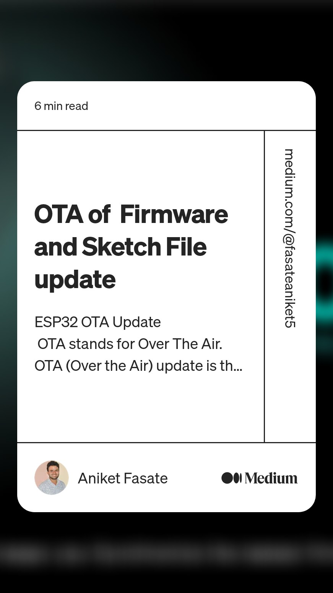
              <div class="portfolio-links">
                <a href="assets/img/portfolio/portfolio-9.jpg" data-gallery="portfolioGallery" class="portfolio-lightbox" title="“Seamless ESP32 Upgrades: A Guide to OTA Firmware and Sketch Updates”"><i class="bx bx-plus"></i></a>
                <a href="https://medium.com/@fasateaniket5/ota-of-firmware-and-sketch-file-update-e4826efce24" title="More Details"><i class="bx bx-link"></i></a>
              </div>
            </div>
          </div>

        </div>

      </div>
    </section><!-- End Portfolio Section -->


    <!-- ======= Project Section ======= -->
    <section id="project" class="resume">
      <div class="container">

        <div class="section-title">
          <h2>Professional Projects</h2>
          <!-- <p>"We are projects"</p> -->
        </div>

        <div class="row">
            <div class="resume-item">
              <h4>Data Logger with Zigbee ( Temp, Humidity, and Lux)</h4>
              <h5>2023 - 2025</h5>
              <!-- <p><em>Northeastern University, Boston</em></p> -->
              <p style="text-align: justify;">The Data Logger with Zigbee, equipped to monitor temperature, humidity, and lux (light intensity), represents a cutting-edge tool in environmental data collection. Utilizing Zigbee technology, a low-power, wireless mesh network standard, this data logger ensures efficient and reliable transmission of environmental data. The device's capability to track temperature and humidity makes it ideal for applications in climate-sensitive environments like greenhouses or storage facilities. Additionally, the lux sensor provides valuable insights into light exposure, crucial for settings like art galleries or plant growth studies. The combination of these sensors, coupled with the robust Zigbee protocol, makes this data logger a versatile and accurate tool for a wide range of data monitoring needs.</p>
            </div>
            <div class="resume-item">
              <h4>Single Phase to Three Phase Converter (Smart India Hackathon, 2019 and bachelor’s project)</h4>
              <h5>Jan-2016 - Dec-2020</h5>
              <p><em>Freelance</em></p>
              <p style="text-align: justify;">The Single Phase to Three Phase Converter is an innovative device designed to bridge the gap between single-phase and three-phase power supply systems. This converter is especially beneficial in areas where three-phase power is not available or is cost-prohibitive to install. It efficiently converts standard single-phase input into a three-phase output, enabling the operation of three-phase equipment in locations with only single-phase power. Ideal for industrial, agricultural, and commercial applications, this converter facilitates the use of three-phase motors, pumps, and other machinery, offering a cost-effective solution without the need for extensive electrical upgrades. Its robust design ensures reliability and longevity, making it a vital tool for various applications requiring three-phase power from a single-phase source.</p>
            </div>
            <div class="resume-item">
              <h4>Real Time Face Detection (Person wearing Mask Or not)</h4>
              <h5>Jan-2022 - April-2022</h5>
              <p><em>Freelance</em></p>
              <p style="text-align: justify;">The Real-Time Face Detection system is a sophisticated technological solution designed to identify faces and determine whether individuals are wearing masks. This system is particularly relevant in the context of health and safety protocols, where mask-wearing has become crucial. Utilizing advanced algorithms and machine learning techniques, it can accurately detect faces in various lighting conditions and angles, and then discern if a mask is being worn. This technology is vital in public spaces, healthcare settings, and businesses, ensuring compliance with safety regulations. Its real-time processing capabilities provide immediate feedback, making it an essential tool for maintaining public health standards in a variety of environments.</p>
            </div>
            <div class="resume-item">
              <h4>Sorting Of Fruits</h4>
              <h5>Jan-2022 - April-2022</h5>
              <p><em>Research Project Sponsored by SGRC</em></p>
              <p style="text-align: justify;">The Sorting of Fruits system is an advanced technological solution designed to automate the process of fruit sorting, enhancing efficiency and accuracy in food processing and agriculture industries. Employing cutting-edge sensors and machine learning algorithms, this system can swiftly differentiate fruits based on size, color, ripeness, and quality. This precision sorting helps in reducing labor costs and minimizes human error, ensuring only high-quality fruits reach the market. It's particularly useful for large-scale producers and packers, where it significantly speeds up the sorting process while maintaining consistency in quality. This innovation not only optimizes operational efficiency but also contributes to reducing food waste, a critical aspect in the journey towards sustainable food production.</p>
            </div>
            <div class="resume-item">
              <h4>Agriculture Quadcopter</h4>
              <h5>Jan-2022 - April-2022</h5>
              <p><em>(Sonserd by V-chip PVT, Pune</em></p>
              <p style="text-align: justify;">The Real-Time Face Detection system is a sophisticated technological solution designed to identify faces and determine whether individuals are wearing masks. This system is particularly relevant in the context of health and safety protocols, where mask-wearing has become crucial. Utilizing advanced algorithms and machine learning techniques, it can accurately detect faces in various lighting conditions and angles, and then discern if a mask is being worn. This technology is vital in public spaces, healthcare settings, and businesses, ensuring compliance with safety regulations. Its real-time processing capabilities provide immediate feedback, making it an essential tool for maintaining public health standards in a variety of environments.</p>
            </div>
            <div class="resume-item">
              <h4>Smart Tourism using Bluetooth Beacons</h4>
              <h5>Jan-2022 - April-2022</h5>
              <p><em>Hackthon 2021</em></p>
              <p style="text-align: justify;">Smart Tourism using Bluetooth Beacons is an innovative approach that enhances the tourist experience through the use of cutting-edge technology. These beacons, small Bluetooth-enabled devices, are strategically placed at various tourist spots, enabling location-based services directly to visitors' smartphones. When a visitor comes within the beacon's range, they receive real-time information, including detailed descriptions of nearby attractions, historical insights, navigation aids, and even personalized recommendations. This technology not only enriches the visitor experience by providing interactive and contextually relevant information but also helps in crowd management and data collection for improving tourism services. Smart Tourism with Bluetooth Beacons represents a significant leap in creating immersive and user-friendly travel experiences, making sightseeing more informative, convenient, and enjoyable.</p>
            </div>
          </div>
          <!-- <div class="col-lg-6" data-aos="fade-up" data-aos-delay="100">
            <h3 class="resume-title">Professional Experience</h3>
            <div class="resume-item">
              <h4>Project Researcher</h4>
              <h5>Feb 2021 - Aug 2023</h5>
              <p><em>Mumbai, India </em></p>
              <ul>
                <li>Site Survey Kit: Engineered in MPU6050 and MPU9250 versions, this kit excels in on-site motion data collection. Achieving high-frequency data acquisition (up to 4kHz accelerometer, 8kHz gyroscope), the handheld device offers real-time insights with graph plotting. Its hosting server capabilities and Over-The-Air updates enhance convenience, ideal for construction and research, providing a portable solution for motion analysis, structural health monitoring, and dynamic behavior research.</li>
                <li>Data Logger: Presenting two versions tailored for diverse monitoring needs. Version 1 integrates DHT22 and LDR sensors, optimizing climate monitoring with real-time user connectivity. Version 2 employs K-type thermocouples for precise Fahrenheit readings, catering to high-temperature environments. Both versions prioritize advanced data analysis, featuring hosting servers for seamless data management.</li>
                <li>Dandi Project: Implementing ESP series microcontrollers, the Dandi Project optimizes structural health monitoring on a 40-meter platform. Utilizing predictive analytics, the device assesses structural integrity. Featuring a userfriendly GUI, OTA updates, and advanced telemetry, this project seamlessly amalgamates IoT capabilities, data analytics, and predictive maintenance for enhanced structural robustness.</li>
                <li>Utilizing ESP32-CAM and YOLOv3, this project employs OpenCV and ESPAsyncWebServer for efficient image processing and web hosting. Through innovative tunneling, users experience dynamic object identification on screens, harmonizing cutting-edge algorithms with ESP32-CAM capabilities for advanced real-time environmental monitoring</li>
                <li>AI/ML Projects : Engaged in diverse projects, including advanced tasks like object detection and image classification. Additionally, simpler yet impactful projects involve sentiment analysis, spam email detection, and predictive text generation. These applications showcase proficiency in machine learning algorithms, neural networks, and natural language processing for comprehensive data analysis. </li>
              </ul>
            </div>
            <div class="resume-item">
              <h4>IoT &amp; AI/ML trainee</h4>
              <h5>Jun 2018 - july 2018</h5>
              <p><em>Defence Research and Development Organisation (DRDO), India</em></p>
              <ul>
                <li>Sentimental Analysis: Engineered an intricate sentiment analysis system employing TensorFlow for neural network architecture, Scikit-learn for machine learning algorithms, and NLTK for natural language processing. Implemented a Convolutional Neural Network (CNN) model with tokenization, embedding layers, and the Adam optimizer for precise text analysis. Rigorous dataset handling, preprocessing, and backpropagation were executed. The Graphical User Interface (GUI) elevated the user experience, integrating real-time feedback. This project showcases comprehensive expertise, offering a robust sentiment identification tool with diverse AI/ML libraries.</li>
                <!-- <li>Managed up to 5 projects or tasks at a given time while under pressure</li> -->
                <!-- <li>Recommended and consulted with clients on the most appropriate graphic design</li> -->
                <!-- <li>Created 4+ design presentations and proposals a month for clients and account managers</li> -->
              <!-- </ul> -->
            <!-- </div> --> 

            <!-- <div class="resume-item">
              <h4>IoT &amp; AI/ML trainee</h4>
              <h5>Jun 2017 - july 2017</h5>
              <p><em>Indian Instituate of Technology, Kanpur, India</em></p>
              <ul>
                <li>Autonomous Vehicle Prototype Development: Pioneering an autonomous vehicle, we initiated the project by assembling the vehicle from scratch. IoT sensors, ultrasonic sensors, and ESP32 controllers facilitated data collection. Subsequently, the data underwent meticulous training in MATLAB using backpropagation. The Raspberry Pi, employed for self-training testing, exemplifies robustness in real-world scenarios. This project integrates cuttingedge technologies, showcasing proficiency in sensor fusion, deep learning, and embedded systems, culminating in a comprehensive autonomous vehicle prototype.</li>
                <!-- <li>Managed up to 5 projects or tasks at a given time while under pressure</li> -->
                <!-- <li>Recommended and consulted with clients on the most appropriate graphic design</li> -->
                <!-- <li>Created 4+ design presentations and proposals a month for clients and account managers</li> -->
              </ul>
            </div> 
          </div>
        </div>

      </div>
    </section><!-- End Resume Section -->


    <!-- ======= Testimonials Section ======= -->
    <section id="testimonials" class="testimonials section-bg">
      <div class="container">

        <div class="section-title">
          <h2>Testimonials</h2>
          <!-- <p>Magnam dolores commodi suscipit. Necessitatibus eius consequatur ex aliquid fuga eum quidem. Sit sint consectetur velit. Quisquam quos quisquam cupiditate. Et nemo qui impedit suscipit alias ea. Quia fugiat sit in iste officiis commodi quidem hic quas.</p> -->
        </div>

        <div class="testimonials-slider swiper" data-aos="fade-up" data-aos-delay="100">
          <div class="swiper-wrapper">

            <div class="swiper-slide">
              <div class="testimonial-item" data-aos="fade-up" data-aos-delay="200">
                <p>
                  <i class="bx bxs-quote-alt-left quote-icon-left"></i>
                  This recommendation letter by a Professor at IIT Bombay highlights Aniket Fasate's exceptional skills in Embedded Systems, IoT, and AI. Evolving from an intern to a researcher, Aniket is commended for his practical expertise, innovative contributions, especially in OTA firmware development, and his strong theoretical knowledge. His ability to handle complex tasks and quick learning capacity are emphasized, reflecting his readiness for advanced challenges and continuous learning.
                  <i class="bx bxs-quote-alt-right quote-icon-right"></i>
                </p>
                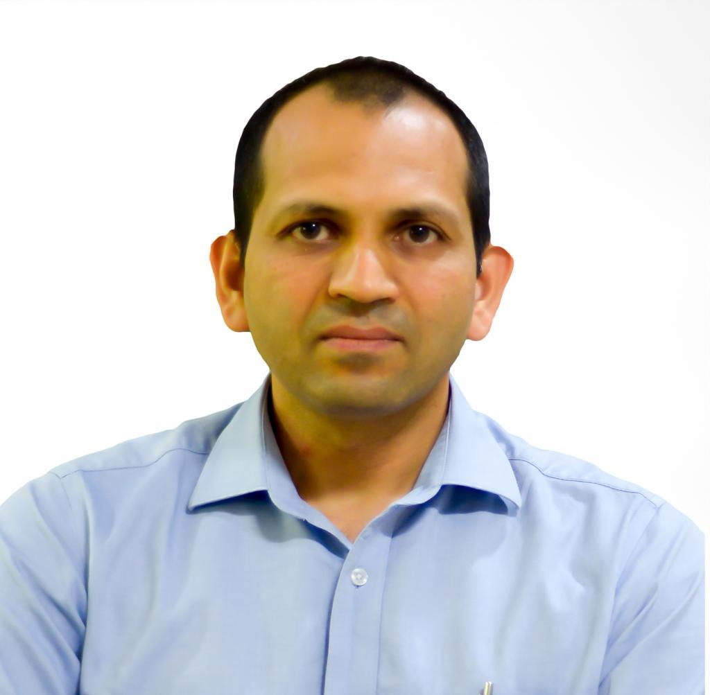
                <h3>Prof.Asim Tewari</h3>
                <h4>Professor, Center for Machine Intelligence &Data Science (C-MInDS) and Department of Mechanical Engineering, IIT Bombay, Powai,</h4>
              </div>
            </div><!-- End testimonial item -->

            <div class="swiper-slide">
              <div class="testimonial-item" data-aos="fade-up" data-aos-delay="300">
                <p>
                  <i class="bx bxs-quote-alt-left quote-icon-left"></i>
                  As Aniket's professor for three years, teaching Digital Electronics and Digital Image Processing, I've observed his dedication to academics and practical projects. His active participation in academic clubs, leadership roles, and commitment to research discussions highlight his potential. Aniket's enthusiasm and achievements promise a significant contribution to any academic community.
                  <i class="bx bxs-quote-alt-right quote-icon-right"></i>
                </p>
                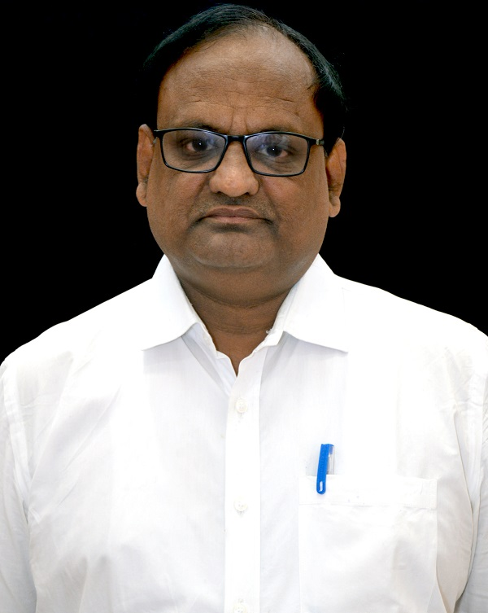
                <h3>Prof. M.N Tibdewal</h3>
                <h4>Professor and Head of Department Electronics and Telecommunication Engineering, Shri Sant Gajanan Maharaj College of Engineering, Shegaon</h4>
              </div>
            </div><!-- End testimonial item -->

            <div class="swiper-slide">
              <div class="testimonial-item" data-aos="fade-up" data-aos-delay="400">
                <p>
                  <i class="bx bxs-quote-alt-left quote-icon-left"></i>
                  In three years, I've observed Aniket's eagerness to learn, marked by humor and amiability. His aptitude in Python, C++, and IoT, coupled with his ability to apply knowledge practically, sets him apart. Aniket excels in teamwork, presentations, and has demonstrated his skills in notable projects like Smart India Hackathon and Driverless Cars seminar.
                  <i class="bx bxs-quote-alt-right quote-icon-right"></i>
                </p>
                
                <h3>prof. K.B Khanchandani</h3>
                <h4>Professor, Department of Electronics and Telecommunication Engineering, Shri Sant Gajanan Maharaj College of Engineering, Shegaon</h4>   
              </div>
            </div><!-- End testimonial item -->

            <div class="swiper-slide">
              <div class="testimonial-item" data-aos="fade-up" data-aos-delay="400">
                <p>
                  <i class="bx bxs-quote-alt-left quote-icon-left"></i>
                  Aniket is a dynamic, technically proficient individual, skilled in Python, Embedded C, and C++. His expertise extends to IoT devices like Espressif boards and Raspberry Pi, excelling in OTA updates and networking protocols. Aniket's creativity enhances user experience, evident in his comprehensive documentation and project presentations. Renowned for his dedication and team leadership, he consistently drives projects towards success, combining ambition with a strong desire for continuous learning and improvement.
                  <i class="bx bxs-quote-alt-right quote-icon-right"></i>
                </p>
                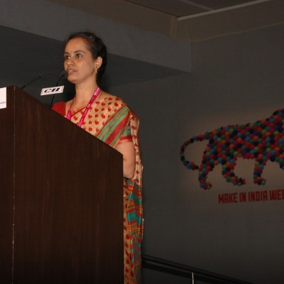
                <h3>Mrs. Vani Sreedhara</h3>
                <h4>Sr. Manager and Program Executive Officer, Machine Intelligence program, 11T Bombay</h4>       
              </div>
            </div><!-- End testimonial item -->


            <div class="swiper-slide">
              <div class="testimonial-item" data-aos="fade-up" data-aos-delay="100">
                <p>
                  <i class="bx bxs-quote-alt-left quote-icon-left"></i>
                  "Aniket's role in managing and executing complex projects is outstanding. His proficiency in Embedded Systems, Python, and AI, combined with a proactive approach, ensures efficient project completion. His leadership and motivational skills not only drive projects forward but also inspire his team members to excel."
                  <i class="bx bxs-quote-alt-right quote-icon-right"></i>
                </p>
                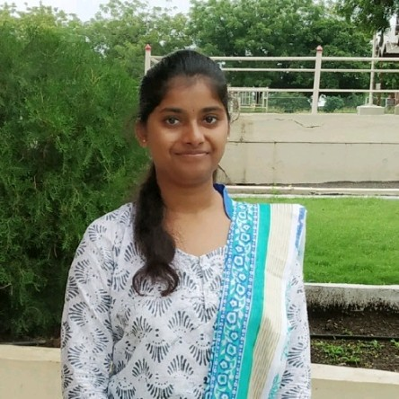
                <h3>Ankita Pachkhede</h3>
                <h4>Assistant System Engineer, Tata Consultancy Services</h4>
              </div>
            </div><!-- End testimonial item -->

            <div class="swiper-slide">
              <div class="testimonial-item" data-aos="fade-up">
                <p>
                  <i class="bx bxs-quote-alt-left quote-icon-left"></i>
                  Aniket stands out as a technically proficient individual with deep knowledge in Embedded Systems, IoT, Python, Machine Learning, and AI. His practical experience, certifications, and dedication to helping peers with projects highlight his leadership and problem-solving skills. His motivational approach inspires teamwork and achievement in technology.
                  <i class="bx bxs-quote-alt-right quote-icon-right"></i>
                </p>
                
                <h3>Dinesh Fukate</h3>
                <h4>SDV Engineer, Bosch Global Software Technologies India</h4>
              </div>
            </div><!-- End testimonial item -->

          </div>
          <div class="swiper-pagination"></div>
        </div>

      </div>
    </section><!-- End Testimonials Section -->

    <!-- ======= Contact Section ======= -->
    <section id="contact" class="contact">
      <div class="container">

        <div class="section-title">
          <h2>Contact</h2>
          <p></p>
        </div>

        <div class="row" data-aos="fade-in">

          <div class="col-lg-5 d-flex align-items-stretch">
            <div class="info">
              <div class="address">
                <i class="bi bi-geo-alt"></i>
                <h4>Location:</h4>
                <p>2 presby Place, Boston MA 02119</p>
              </div>

              <div class="email">
                <i class="bi bi-envelope"></i>
                <h4>Email:</h4>
                <p>fasate.a@northeastern.edu</p>
              </div>

              <div class="phone">
                <i class="bi bi-phone"></i>
                <h4>Call:</h4>
                <p>+1 8573 3284 78</p>
              </div>

              <iframe src="https://www.google.com/maps/embed?pb=!1m18!1m12!1m3!1d2949.8664026106194!2d-71.0789145240125!3d42.324048171196246!2m3!1f0!2f0!3f0!3m2!1i1024!2i768!4f13.1!3m3!1m2!1s0x89e37a3657a9b44d%3A0xe65046c365cc6566!2s2%20Presby%20Pl%2C%20Boston%2C%20MA%2002119!5e0!3m2!1sen!2sus!4v1702514722846!5m2!1sen!2sus" width="400" height="300" style="border:0;" allowfullscreen="" loading="lazy" referrerpolicy="no-referrer-when-downgrade"></iframe>
            </div>

          </div>

          <div class="col-lg-7 mt-5 mt-lg-0 d-flex align-items-stretch">
            <form action="forms/contact.php" method="post" role="form" class="php-email-form">
              <div class="row">
                <div class="form-group col-md-6">
                  <label for="name">Your Name</label>
                  <input type="text" name="name" class="form-control" id="name" required>
                </div>
                <div class="form-group col-md-6">
                  <label for="name">Your Email</label>
                  <input type="email" class="form-control" name="email" id="email" required>
                </div>
              </div>
              <div class="form-group">
                <label for="name">Subject</label>
                <input type="text" class="form-control" name="subject" id="subject" required>
              </div>
              <div class="form-group">
                <label for="name">Message</label>
                <textarea class="form-control" name="message" rows="10" required></textarea>
              </div>
              <div class="my-3">
                <div class="loading">Loading</div>
                <div class="error-message"></div>
                <div class="sent-message">Your message has been sent. Thank you!</div>
              </div>
              <div class="text-center"><button type="submit">Send Message</button></div>
            </form>
          </div>

        </div>

      </div>
    </section><!-- End Contact Section -->

  </main><!-- End #main -->

  <!-- ======= Footer ======= -->
  <footer id="footer">
    <div class="container">
      <div class="copyright">
        &copy; Copyright <strong><span>iPortfolio</span></strong>
      </div>
      <div class="credits">
        <!-- All the links in the footer should remain intact. -->
        <!-- You can delete the links only if you purchased the pro version. -->
        <!-- Licensing information: https://bootstrapmade.com/license/ -->
        <!-- Purchase the pro version with working PHP/AJAX contact form: https://bootstrapmade.com/iportfolio-bootstrap-portfolio-websites-template/ -->
        Designed by <a href="https://bootstrapmade.com/">BootstrapMade</a>
      </div>
    </div>
  </footer><!-- End  Footer -->

  <a href="#" class="back-to-top d-flex align-items-center justify-content-center"><i class="bi bi-arrow-up-short"></i></a>

  <!-- Vendor JS Files -->
  <script src="assets/vendor/purecounter/purecounter_vanilla.js"></script>
  <script src="assets/vendor/aos/aos.js"></script>
  <script src="assets/vendor/bootstrap/js/bootstrap.bundle.min.js"></script>
  <script src="assets/vendor/glightbox/js/glightbox.min.js"></script>
  <script src="assets/vendor/isotope-layout/isotope.pkgd.min.js"></script>
  <script src="assets/vendor/swiper/swiper-bundle.min.js"></script>
  <script src="assets/vendor/typed.js/typed.umd.js"></script>
  <script src="assets/vendor/waypoints/noframework.waypoints.js"></script>
  <script src="assets/vendor/php-email-form/validate.js"></script>

  <!-- Template Main JS File -->
  <script src="assets/js/main.js"></script>

</body>

</html>